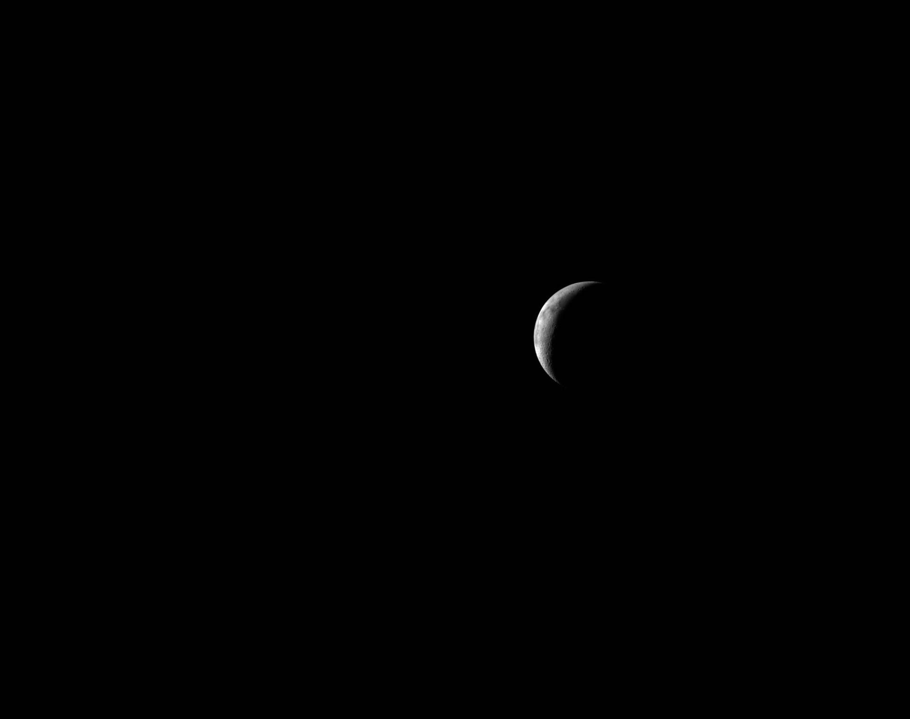
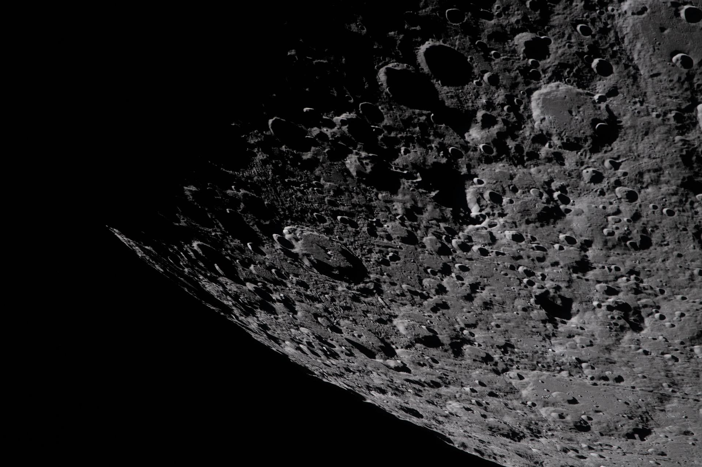

ARTEMIS II

Artemis II will mark the triumphant return of human explorers to the lunar realm. After decades of absence, four astronauts will orbit the Moon, carrying with them the hopes of billions.
This is the moment that history remembers. The Commander, Pilot, and two Mission Specialists will push beyond Earth's protective sphere into the vast darkness of space. They will not land on the Moon—not yet. But they will see it closer than any human has in fifty years. They will feel the cosmic radiation, navigate by the stars, and prove that humanity has the courage to venture beyond its cradle.
The mission will last approximately 10 days, with a crew of four bringing the skill, bravery, and determination needed for this extraordinary journey. Artemis II is the bridge between dreams and reality.
The Crew
Commander
The leader of this expedition, responsible for the safety and success of the entire crew during this historic mission.
Pilot
Expert in spacecraft operations, monitoring systems and navigation throughout the journey to the Moon.
Mission Specialist 1
Scientist and explorer, conducting crucial experiments and observations during lunar orbit.
Mission Specialist 2
Engineer and specialist, monitoring advanced systems and conducting vital mission operations.
Mission Objectives
Lunar Orbit
Achieve stable orbit around the Moon, validating all life support systems in deep space conditions.
System Validation
Test Orion's human-rated systems with a crew aboard, ensuring safety for future landing missions.
Navigation Tests
Perform precise navigation maneuvers required for successful lunar approach and return.
Science Operations
Conduct observations and measurements from lunar orbit to advance scientific understanding.
Artemis II Gallery





History in the Making
Artemis II represents humanity's commitment to returning to the Moon and establishing a sustainable presence among the stars.
Take the Test